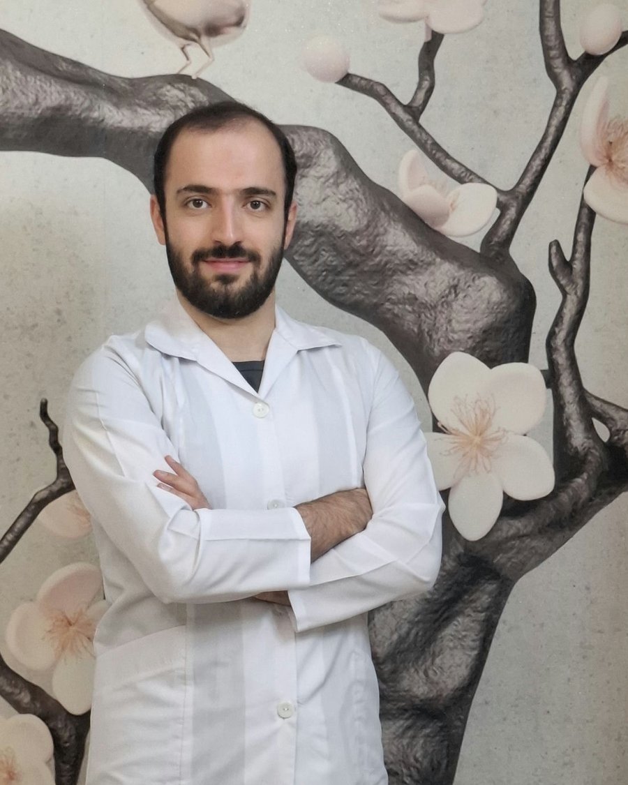

معاینات طب کار
معاینات بدو استخدام و دورهای، ارزیابی اولیه سلامت و پایش تغییرات سلامتی کارکنان در محیط کار.
متخصص طب کار · Occupational Medicine Specialist
متخصص طب کار و بیماریهای شغلی، دانشآموختهی دانشگاه علوم پزشکی تهران. تمرکز من بر ارگونومی و بیماریهای شغلی تنفسی، شنوایی و اسکلتی‑عضلانی است.

سلامت شغلیخدمات
خدمات تخصصی سلامت شغلی برای کارکنان و سازمانها، با تمرکز بر پیشگیری و تصمیمگیری مبتنی بر شواهد.
معاینات بدو استخدام و دورهای، ارزیابی اولیه سلامت و پایش تغییرات سلامتی کارکنان در محیط کار.
بررسی توانایی انجام کار و تطابق شرایط جسمی و روانی فرد با الزامات شغل، پیش از اشتغال یا بازگشت به کار.
ارزیابی ارگونومیک محیط کار و تشخیص و پیگیری بیماریهای شغلی تنفسی، شنوایی و اسکلتی‑عضلانی.
آموزش سلامت شغلی به کارکنان و مدیران، مشاوره فردی و همکاری با تیمهای HSE و منابع انسانی.
رزومه
خلاصهای از سوابق تحصیلی، بالینی و حرفهای؛ نسخهی کامل رزومه در فایل PDF آمادهی دریافت است.
ارتباط
برای هماهنگی جلسه، مشاوره یا همکاری سازمانی، پیام بدهید.